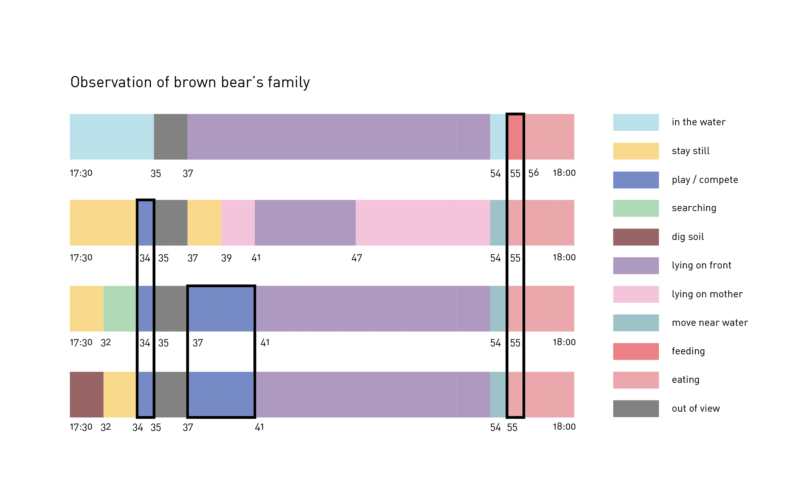
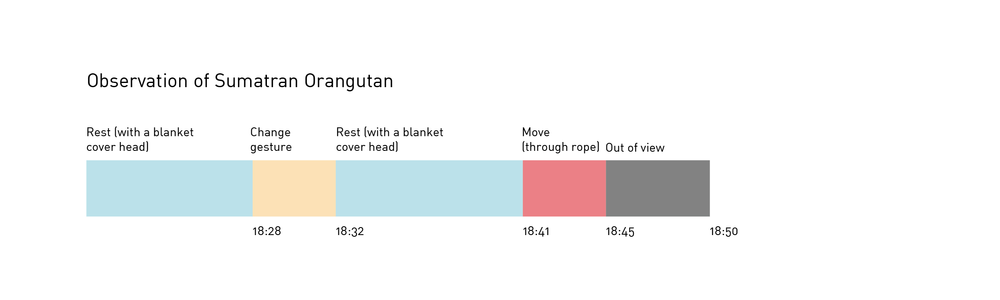

Ethogram


Reflection & Finding
When I observe the brown bears' family, I noticed that the observation way, compare with group, is more about individual's behavior. However when I observe one bear in the group, I feel they will be affected by each other's behavior. So I draw a new form to indicate the interactions among the group. Also there are some ambigous behavior happend during the process which made me think about if there is any way to highlight them and add more information to them. For instance, when I observe the brown bear family, there was a little bear lying on its mom and there are two little bears played and battled with each other. Suddenly, the mother bear look back and roared which made the two playing bears stoped their game and also made another little left the mother bear and lied down on front. And it happened again when the little bear tried to lying on its mom. So I was a little bit confused about the mother bear's nehavior. Another example is that the orangutan in San Diego Zoo always use a blanket like stuff to cover itself so it would be difficult for me to know what happened under the blanket. One of my friend who visited zoo in Seattle told me that she saw an orangutan in that zoo do the similar thing when it eating because it felt anxious and want to hide from human during the meal time. I am pretty sure that I did not found there are any behavior which looks like eating, but it is still fun for me to discover what happend under the blanket and the reason they do that.
Problems
1 What is the selection principle of a zoo to decide one kind of animals may have observation camera or not?
2 Are there any more efficient way to record low-speed species just like koala?
3 Are there more efficient way for the camera to always follow the animals?
4 Are there any way for the observers to identify the specific animal from a group (like penguins)?
Expert: MICHAEL PROCTOR(Brown Bear) & DR. BIRUTÉ MARY GALDIKAS(Orangutan)